측량및지형공간정보산업기사 (2004-05-23 기출문제)
1과목: 응용측량
1. 다음 그림과 같은 도로 횡단면의 절토 단면적은?
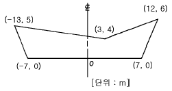
- 87.0m2
- 94.0m2
- 97.0m2
- 103.0m2
(정답률: 알수없음)

2. 기점에서 300.95m 인 위치에 있는 교점 I.P의 교각 I가 85° 인 단곡선에서 곡선반경 R이 80m인 경우 현장 ℓ =20m에 대한 현편거의 크기는?
- 5.5m
- 5m
- 3.5m
- 3m
(정답률: 알수없음)
3. 하천의 유량(Q)측정공식은? (단, V : 유속, A : 단면적, H : 수심)
- Q = A · V · H
- Q = A · V
- Q = A / V
- Q = V / A
(정답률: 알수없음)
4. 하천의 유속측정에서 수면으로부터 수심의 0.2, 0.4, 0.6, 0.8 깊이에 대한 유속 측정결과가 각각 0.72m/sec, 0.68 m/sec, 0.56m/sec, 0.42m/sec 이었다. 3점법에 의한 평균 유속은?
- 0.625m/sec
- 0.565m/sec
- 0.560m/sec
- 0.555m/sec
(정답률: 알수없음)
5. 하천의 수면구배를 정하기 위해 100m 간격으로 동시수위를 측정하여 다음의 결과를 얻었다. 이 결과로부터 구한이 구간의 평균 수면구배는?
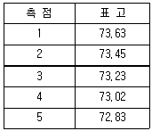
- 1/500
- 1/750
- 1/1000
- 1/1250
(정답률: 알수없음)
6. 기설 삼각점을 이용, 갱문 A와 갱문 B의 좌표를 구하여 다음의 값을 얻었다. AB의 거리는?
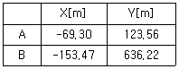
- 514.27m
- 519.52m
- 558.97m
- 563.27m
(정답률: 알수없음)
7. 광산의 갱도내 고저차 측량에서 천정에 측점이 설치되어 있을때, 두점 A, B간의 사거리가 60m이고, 기계고가 1.70m, 시준고 1.50m 연직각을 3° 라고 하면 A점과 B점의 고저차는 얼마인가?
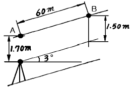
- 1.25m
- 2.50m
- 2.94m
- 4.25m
(정답률: 알수없음)
8. 시설물의 1점을 시준할 때 시준선과 시설물축선이 이루는 각 α 는 크기에 따라 입체감에 변화를 주는데 일반적으로 몇 도 범위일 때 입체감 있게 계획이 잘된 경관을 얻을 수 있는가?
- 10° ＜ α ≦ 30°
- 30° ＜ α ≦ 50°
- 40° ＜ α ≦ 60°
- 50° ＜ α ≦ 70°
(정답률: 알수없음)
9. 완화곡선에 대한 설명으로 옳지 않은 것은?
- 모든 클로소이드는 닮은 꼴이며 클로소이드 요소는 길이의 단위를 가진 것과 단위가 없는 것이 있다.
- 클로소이드의 형식은 S형, 복합형, 기본형 등이 있다
- 완화곡선의 반지름은 시점에서 무한대, 종점에서 원곡선의 반지름으로 된다.
- 완화곡선의 접선은 시점에서 원호에, 종점에서 직선에 접한다.
(정답률: 알수없음)
10. 다음과 같이 도로의 2차포물선에 의한 종단곡선(Vertical Curve)에서 가장 낮은점(Lowest Point)이 위치하는 곳은 A점으로부터 얼마나 떨어져 있는가? (단, 종단곡선의 거리(L)는 60m이고 A점의 계획고(Design Elevation)는 46.80m 이다.)
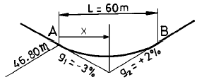
- 24.00m
- 30.00m
- 36.00m
- 40.00m
(정답률: 알수없음)
11. 그림과 같이 중앙종거가 20m, 현장이 200m인 원곡선의 곡율반경은?
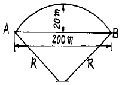
- 260m
- 450m
- 550m
- 650m
(정답률: 알수없음)
12. 그림에서 A점의 표고가 50m라면 B점의 표고는?
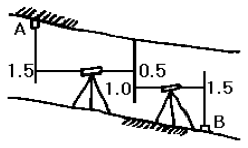
- 46.5m
- 47.5m
- 49.0m
- 49.5m
(정답률: 알수없음)
13. 축척1/10000의 도면상에서 구적기를 사용하여 면적을 측정하였더니 2,801m2이었다. 그런데 이 도면은 종횡 모두 1%씩 수축이 되어 있었다면 실제 면적은?
- 2,829m2
- 2,858m2
- 2,745m2
- 2,773m2
(정답률: 알수없음)
14. 경관평가를 위한 평가지표와 관계가 없는 것?
- 가시· 불가시
- 식별도
- 위압감
- 촉감
(정답률: 알수없음)
15. 경부고속철도의 곡선부에서 곡선반경이 10,000m인 곡선 위를 300km/h로 주행할 경우 캔트의 크기는? (단, 레일 간격은 1435mm임)
- 101.7mm
- 106.2mm
- 180.0mm
- 134.9mm
(정답률: 알수없음)
16. 체적 계산법 중에서 저수지의 용량 산정에 가장 적합한 방법은?
- 점고법
- 배횡거법
- 단면법
- 등고선법
(정답률: 알수없음)
17. 그림과 같이 두직선의 교점에 장애물이 있어 C, D 측점에서 방향각(α)을 관측하였다. 교각(I)은? (단, αCA＝228° 30′ , αCD＝82° 00′ , αDB＝136° 30′ )
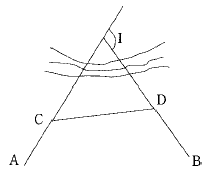
- 54° 30′
- 88° 00′
- 92° 00′
- 146° 30′
(정답률: 알수없음)
18. 도형의 면적을 구할 경우 그림에서 곡선의 AB를 2차 곡선으로 가정할 때 그 면적 ABEF를 구하는 공식은?
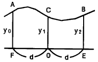
- A = d/2(y0 + 2y1 + y2)
- A = d/2(y0 + 3y1 + y2)
- A = d/3(y0 + 4y1 + y2)
- A = d/2(y0 + 4y1 + y2)
(정답률: 알수없음)
19. 클로소이드 완화곡선에서 동일 곡선반경에서 완화곡선의 매개변수(A)가 1.5배 증가하면 완화곡선길이는 몇배가 되는가?
- 2.25
- 3.00
- 3.50
- 6.90
(정답률: 알수없음)
20. 다음 중 터널측량에 관한 설명이 틀린 것은?
- 터널측량을 크게 나누어 갱외측량, 갱내측량, 갱내외 연결측량으로 구분한다.
- 광의의 터널에는 입갱(立坑)과 사갱(斜坑) 또는 지하 발전소나 지하저유소와 같은 인공적 공동(空洞)도 포함된다.
- 터널측량의 순서는 갱내측량, 갱외측량, 갱내외 연결 측량의 순서로 행한다.
- 갱내의 측량에는 기계의 십자선과 표척 등에 조명이 필요하다.
(정답률: 알수없음)
2과목: 사진측량 및 원격탐사
21. 대지표정(Absolute orientation)에 대한 설명으로 옳은 것은?
- 축척을 맞추고 높이를 바로잡는 작업이다.
- Y방향 시차를 소거하는 작업이다.
- X방향 시차를 소거하는 작업이다.
- 화면거리를 맞추는 작업이다.
(정답률: 알수없음)
22. 내부표정에 대한 설명으로 옳지 않는 것은?
- 사진의 주점을 맞춘다.
- 사진의 주점거리를 조정해야 한다.
- 상호표정을 하기 전에 해야한다.
- 축척과 경사를 결정해야 한다.
(정답률: 알수없음)
23. 항공사진측량의 장점을 설명한 것 중 옳지 않은 것은?
- 대축척일수록 경제적이다.
- 정량적 및 정성적 측정이 가능하다.
- 4차원 측정이 가능하다.
- 동체(動體)측정에 의한 보존 및 접근하기 어려운 대상물의 측정도 할 수 있다.
(정답률: 알수없음)
24. 항공사진의 촬영축척에 의한 분류에서 중축척 도화란 일반적으로 어느 정도의 촬영고도에서 얻어진 사진을 도화한 것인가?
- 800m 이내
- 800∼3000m
- 3000∼5000m
- 5000m 이상
(정답률: 알수없음)
25. 사진판독의 요소라 할 수 없는 것은?
- 색조
- 모양
- 고도
- 형상
(정답률: 알수없음)
26. 항공사진측량용 사진기의 특징이 아닌 것은?
- 초점거리가 일반사진기에 비해 짧다.
- 지표(fiducial mark)가 있다.
- 렌즈의 왜곡이 아주 작다.
- 무게가 수십 kg 정도로 무겁다.
(정답률: 알수없음)
27. 사진렌즈의 중심점으로부터 지표면에 연직으로 내린 선이 지면과 교차하는 점을 무엇이라 하는가?
- 유점
- 등각점
- 주점
- 연직점
(정답률: 알수없음)
28. 사진기의 경사에 의한 축척과 고도를 수정하여 등고선을 삽입한 사진지도는?
- 약조정 집성 사진지도
- 정사 투영 사진지도
- 반조정 집성 사진지도
- 조정 집성 사진지도
(정답률: 알수없음)
29. 항공사진을 판독할 때 철도와 도로, 절과 사원의 구별을 위한 요소로 가장 관계가 깊은 것은?
- 촬영조건
- 음영
- 촬영계절
- 형 또는 배치
(정답률: 알수없음)
30. 초점거리 150mm의 카메라로 기준면으로부터 7,000m의 높이에서 찍은 수직사진에서 기준면 아래 비고 500m의 사진축척은?
- 1/40,000
- 1/50,000
- 1/60,000
- 1/70,000
(정답률: 알수없음)
31. 넓은 지역을 항공사진 촬영할 경우 일반적인 촬영방향으로 알맞은 것은?
- 고저 방향
- 남북 방향
- 동서 방향
- 저고 방향
(정답률: 알수없음)
32. 시차차에 관한 설명중 옳지 않은 것은?
- 시차차의 크기는 촬영고도에 반비례한다.
- 시차차의 크기는 초점거리에 비례한다.
- 시차차의 크기는 사진 축척의 분모수에 반비례한다.
- 시차차의 크기는 촬영기선장에 비례한다.
(정답률: 알수없음)
33. 항공사진의 판독순서로 옳은 것은?
- 촬영 및 사진작성 → 판독 → 지리조사 → 판독기 준작성 → 정리
- 촬영 및 사진작성 → 지리조사 → 판독 → 정리 → 판독기준 작성
- 촬영 및 사진작성 → 정리 → 판독기준 작성 → 판독 → 지리조사
- 촬영 및 사진작성 → 판독기준 작성 → 판독 → 지리조사 → 정리
(정답률: 알수없음)
34. 항공사진측량에서 초점거리 152mm인 사진기로 비행고도 3,000m에서 촬영을 하였을 때 실제 길이가 150m인 교량의 사진상 길이는?
- 3.0mm
- 7.6mm
- 15.2mm
- 30.4mm
(정답률: 알수없음)
35. 축척 1/10000인 항공사진에서 1cm×2cm 크기의 운동장의 실제 면적은?
- 200m2
- 2000m2
- 20000m2
- 200000m2
(정답률: 알수없음)
36. 촬영고도가 6350m, 초점거리가 25cm 일 때 이 항공사진의 축척은?
- 1 / 25400
- 1 / 25000
- 1 / 15875
- 1 / 10000
(정답률: 알수없음)
37. 평지를 촬영고도 1500m로 촬영한 연직사진이 있다. 이 때 사진상에 있는 2점간의 시차차를 측정한 경우 1㎜일 때 2점간의 비고는? (단, 카메라의 초점거리 15㎝, 화면의 크기 23㎝×23㎝, 종중복도는 60% 임)
- 13.3m
- 14.3m
- 15.3m
- 16.3m
(정답률: 알수없음)
38. 초점거리가 210mm, 화면크기가 23cm× 23cm, 비행고도가 6300m인 항공사진의 입체모델의 촬영면적은? (단, 종중복도= 60%, 횡중복도=20%)
- 15.24km2
- 19.04km2
- 37.04km2
- 47.41km2
(정답률: 알수없음)
39. 축척 1/20,000으로 촬영한 수직사진이 있다. 이 사진의 크기가 23cm×23cm, 종중복도가 60%라 하면 촬영기선의 길이는?
- 1,840m
- 2,450m
- 2,840m
- 3,220m
(정답률: 알수없음)
40. 원격탐측에 대한 설명으로 옳지 않은 것은?
- 탐측된 자료가 즉시 이용될 수 있으며 재해 및 환경문제 해결에 편리하다.
- 원격탐측 자료는 물체의 반사 또는 방사의 스펙트럴 특성에 의존 한다.
- 자료의 양은 대단히 많으며 불필요한 자료가 포함되어 있다.
- 자료 수집 장비로는 수동적 센서와 능동적 센서가 있으며 Laser 거리관측기는 수동적 센서로 분류된다.
(정답률: 알수없음)
3과목: GIS 및 GPS
41. 삼변측량에서 변의 길이로부터 각을 계산하는 식은?
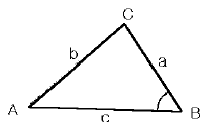
- cosB = (a2+b2+c2 / 2ca)
- cosB = (a2+b2-c2 / 2ca)
- cosB = (b2-c2-a2 / 2ca)
- cosB = (c2+a2-b2 / 2ca)
(정답률: 알수없음)
42. 50m의 테이프가 표준척보다 3㎝ 짧다. 이 테이프로 200m의 거리를 측정 하였을 때 실제의 거리는?
- 200.88m
- 199.88m
- 198.88m
- 201.88m
(정답률: 알수없음)
43. 신장 1.6m의 사람이 해안에서 해면을 바라볼 때 시계는? (단, 지구반지름은 6370km이고, 기차는 무시한다.)
- 약 2900m
- 약 4500m
- 약 6500m
- 약 8200m
(정답률: 알수없음)
44. 범세계위치결정체계(GPS)에 대한 설명 중 틀린 것은?
- 관측점의 위치는 정확한 위치를 알고 있는 위성에서 발사한 전파의 소요시간을 관측함으로서 결정한다.
- GPS 위성은 약 20,000㎞의 고도에서 24시간의 주기로 운행한다.
- 구성은 우주부문, 제어부문, 사용자부문으로 이루어진다.
- GPS 위성은 1547.42MHz의 주파수를 가진 L1과 1227.60MHz의 주파수를 가진 L2 신호를 전송한다
(정답률: 알수없음)
45. 축척 1/25,000 지형도 상에서 두점간의 거리는 11.2cm 이며, 축척이 다른 지형도의 같은 두 점간의 거리는 56cm이다. 이 축척이 다른 지형도에서 어느 구역의 측정한 면적이 5cm2이었다면 실제면적은?
- 1,250m2
- 12,500m2
- 125,000m2
- 1,250,000m2
(정답률: 알수없음)
46. 인접한 지도들의 경계에서 지형을 표현할 때 위치나 내용의 불일치를 제거하는 처리방법을 나타내는 용어는?
- 에지 검출(Edge Detection)
- 에지 강조(Edge Enhancement)
- 경계선 정합(Edge Matching)
- 편집(Editing)
(정답률: 17%)
47. 그림과 같이 빗금부분의 장애물로 인하여 AC 및 BC를 측정하고 그 사이에 AC, BC 길이의 1/3씩을 A와 B에서 취하여 P, Q로 하였다면 AB의 거리는? (단, PQ의 거리는 25.75m이다.)
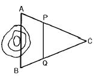
- 38.625m
- 37.625m
- 35.510m
- 29.785m
(정답률: 알수없음)
48. 다음 중 삼각망의 정도가 가장 높은 것은?
- 다각망
- 사변형 삼각망
- 유심 삼각망
- 단열 삼각망
(정답률: 알수없음)
49. 다음 중 지형공간정보체계의 자료 유지관리에 해당하지않는 것은?
- 자료개발
- 자료저장
- 자료유지
- 자료등록
(정답률: 알수없음)
50. 그림과 같은 트래버스에서 AL의 방위각이 19° 48' 26", BM의 방위각이 310° 36' 43", 내각의 총합이 1190° 47' 22" 일 때 측각 오차는?
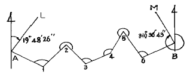
- +25"
- -55"
- +45"
- -25"
(정답률: 알수없음)
51. 평판측량에서 평판을 세울 때 만족시켜야 하는 3가지 조건이 아닌 것은?
- 정준
- 구심
- 편심
- 표정
(정답률: 알수없음)
52. 다음 설명 중 벡터식 자료구조가 아닌 것은?
- 점사상(Point)
- 선사상(Line)
- 면사상(Polygon)
- 격자구조(Grid)
(정답률: 알수없음)
53. 그림과 같이 측정된 경사거리 L로 부터 수평거리 D를 구하는 공식으로 적절하지 않은 것은?
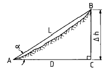
- (△h/2) × cot(α/2)
- L × cosα
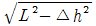
- L-(△h2/2L)
(정답률: 알수없음)
54. 수치지형모형에 대한 설명 중 옳지 않은 것은?
- 수치화된 지형도의 자료원, 사진측량 및 원격탐측을 이용하여 수치지형모형의 자료를 취득할 수 있다.
- 수치지형모형은 지구 표면의 일부를 수치적으로 표현한 것이라고 할 수 있다.
- 수치지형모형은 대부분 사각형 격자 또는 불규칙삼각망의 자료구축방법을 따르고 있다.
- 수치지형모형의 보간방법을 선택하는 가장 중요한 기준은 자료점들의 정확도와 분포상황이다.
(정답률: 알수없음)
55. 그림과 같이 P점의 표고를 구하고자 A, B, C의 수준점에서 직접 수준측량을 하여 각각 다음 같은 표고값을 얻었다. P점의 최확값은?
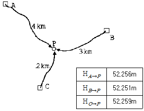
- 52.251m
- 52.255m
- 52.256m
- 52.259m
(정답률: 알수없음)
56. 원곡선에서 교각이 32° 30'이고 곡선반지름이 300m일 때 곡선시점의 추가거리가 356.35m이면 곡선 종점까지의 추가 거리는?
- 526.49m
- 526.69m
- 526.79m
- 529.89m
(정답률: 알수없음)
57. 다음 중 기상관측위성의 종류로 옳은 것은?
- LANDSAT
- SPOT
- NOAA
- SKYLAB
(정답률: 알수없음)
58. 수준측량에서 5km 왕복측정에서 허용오차가 15mm일 때 2km 왕복측정의 경우 제한오차는?
- 8.0mm
- 9.5mm
- 1.2mm
- 6.0mm
(정답률: 알수없음)
59. 제도오차를 0.3mm로 하는 평판측량에서 구심을 3cm까지 허용한다면 축척은?
- 1/200
- 1/300
- 1/500
- 1/600
(정답률: 알수없음)
60. 수평각 관측을 행하여 다음 결과를 얻었다. 1회 관측의 경중률이 같다고 할 때 최확치에 대한 표준오차는?
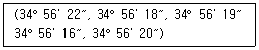
- ± 1.0″
- ± 1.8″
- ± 2.2″
- ± 2.6″
(정답률: 알수없음)
4과목: 측량학
61. 측량법상의 벌칙 중 3년 이하의 징역 또는 1000만원 이하의 벌금에 처하는 것이 아닌 것은?
- 미리 조작한 가격으로 입찰한 자
- 다른사람의 견적의 제출 자
- 부정한 방법으로 측량업의 등록을 한 자
- 입찰행위를 방해한 자
(정답률: 알수없음)
62. 다음 중 서울특별시장, 광역시장 또는 도지사가 해야 하는 일은?
- 기본측량을 실시하기 위한 토지수용
- 기본측량의 실시공고(公告)
- 기본측량에 관한 장기계획(長期計劃)
- 기본측량을 실시하기 위한 장해물 제거
(정답률: 알수없음)
63. 국토지리정보원장은 도시인 경우 몇년을 기준으로 하여 지도를 수정하여야 하는가?
- 1년
- 2년
- 3년
- 5년
(정답률: 알수없음)
64. 다음 중 공공삼각점 표석의 표주 상단에 표시되어 있는 기호는?
- 원(○)
- 십자(+)
- 삼각형(△)
- 점(·)
(정답률: 알수없음)
65. 다음 중 임시 설치표지는?
- 삼각점표석(三角点標石)
- 표기(標旗)
- 측표(測標)
- 자기점표석(磁氣点標石)
(정답률: 알수없음)
66. 지도의 주기(註記)원칙중 틀린 것은?
- 자획이 복잡한 한자에 있어서는 알기 쉬운 약자로 표시할 수 있다.
- 문자의 크기 등에 관한 사항은 국토지리정보원장이 정한다.
- 문자는 한글, 한자, 영자 및 아라비아숫자로서 표기한다.
- 한글, 한자는 고딕체를 사용한다.
(정답률: 알수없음)
67. 세계측지계 및 측량의 원점값의 결정은 누구의 령에 의해 정하는가?
- 대통령
- 국토지리정보원장
- 건설교통부장관
- 행정자치부장관
(정답률: 알수없음)
68. 건설교통부 장관의 권한을 국토지리정보원장에게 위임한 업무가 아닌 것은？
- 공공측량 및 일반측량에서 제외되는 측량의 지정고시
- 측량기기 성능검사 대행자의 등록
- 지형지물의 변동에 관한 보고의 접수
- 공공측량업의 등록 및 변경등록
(정답률: 알수없음)
69. 측량법 중 200만원이하의 과태료에 해당되는 벌칙은?
- 측량업 등록증을 대여한 자
- 기본측량 성과를 고의로 사실과 상이하게 한 자
- 성능검사를 부정하게 한 자
- 정당한 사유없이 토지·죽목등의 일시사용을 거부한 자
(정답률: 알수없음)
70. 측량심의회에서 심의하는 사항이 아닌 것은？
- 측량기술의 연구, 발전
- 기본측량에 관한 계획의 수립 및 실시
- 측량도서의 발간
- 공공측량의 계획
(정답률: 알수없음)
71. 측량업의 종류는 몇가지로 분류되는가?
- 9종
- 8종
- 5종
- 3종
(정답률: 알수없음)
72. 측량업 등록의 결격 사유에 해당되지 않는 경우는?
- 국가보안법을 위반하여 금고 이상의 형의 집행유예선고를 받고 그 집행유예기간중에 있는자
- 등록수첩을 대여하여 측량업 등록이 취소된후 2년이 경과된자
- 임원중에 파산선고를 받고 복권되지 아니한 자가 있는 법인
- 금치산선고를 받은자
(정답률: 알수없음)
73. 공공측량에서 제외되는 측량으로 볼 수 없는 것은？
- 지적법에 의한 지적측량
- 국지적측량 또는 고도의 정확도를 요하지 아니하는 측량으로 건설교통부장관이 고시하는 측량
- 수로업무법에 의한 수로측량
- 관계법령의 규정에 의하여 허가· 인가 등의 신청서에 첨부하여야 할 측량도서를 작성하기 위하여 실시되는 측량
(정답률: 알수없음)
74. 기존측량업의 양도에 의하여 측량업의 등록을 하고자할 때 그승계 사유가 발생한날로부터 며칠이내에 신고를 하여야 하는가?
- 60일
- 30일
- 20일
- 10일
(정답률: 알수없음)
75. 공공측량의 측량성과 또는 측량기록의 보관자는?
- 시.도지사
- 건설교통부장관
- 공공측량 계획기관
- 공공측량 작업기관
(정답률: 알수없음)
76. 지형도에 표기하는 삼각점 표고 수치는 m 단위로 소수점이하 몇 자리까지 표시하는가?
- 1 자리까지
- 2 자리까지
- 3 자리까지
- 4 자리까지
(정답률: 알수없음)
77. 다음은 측량업의 등록을 취소하거나 6월이내의 기간을 정하여 영업의 정지를 명할 수 있는 경우이다. 틀린 것은?
- 고의로 인하여 측량을 부정확하게 한 때
- 정당한 사유없이 1년동안 영업을 하지 않은 때
- 과실로 인하여 측량을 부정확하게 한 때
- 측량업의 등록기준에 미달하게 된 때
(정답률: 알수없음)
78. 측량법에서 정의한 측량성과란?
- 당해 측량에서 얻은 지형측량의 최종성과만을 말한다
- 당해 측량에서 얻은 최종결과를 말한다
- 당해 측량에서 얻은 삼각점의 최종결과치만을 말한다
- 당해 측량에서 얻은 수준점의 최종결과치만을 말한다
(정답률: 알수없음)
79. 지도도식의 기호 및 선의 종류에 대한 설명 중 옳지 않은 것은?
- 기호 및 선의 굵기는 건설교통부장관이 정한다.
- 지물의 실제형상 또는 상징물의 표현은 선 또는 기호로 한다.
- 선은 실선과 파선으로 구분한다.
- 지모의 표현은 등고선으로 한다.
(정답률: 알수없음)
80. 건설교통부장관은 지도등의 판매가격을 정한 때에는 이를 관보에 고시하여야 하는 바, 고시내용에 포함되어야 하는 사항 중 옳지 않은 것은?
- 축척
- 단위
- 표고
- 규격
(정답률: 알수없음)